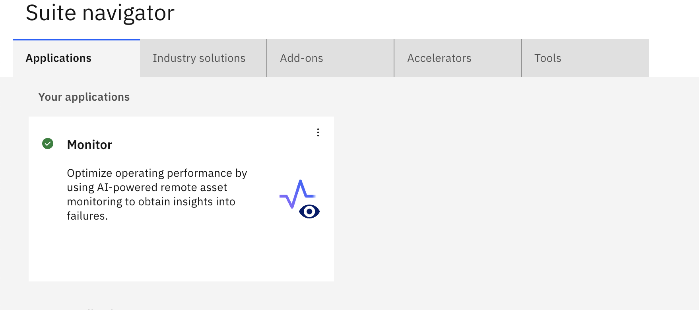
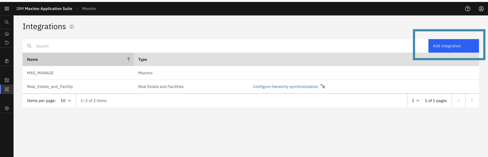
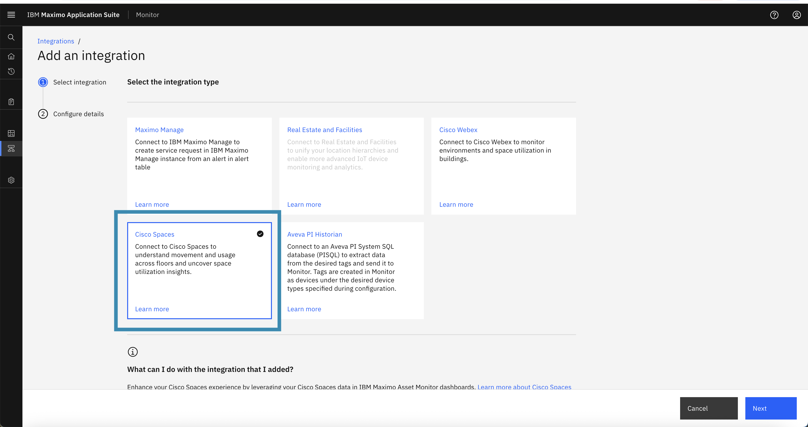
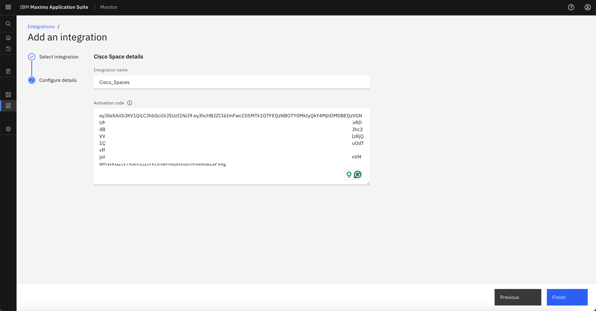
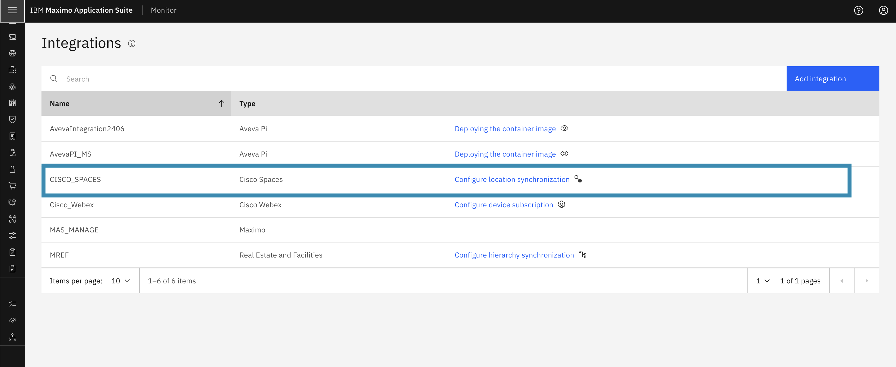
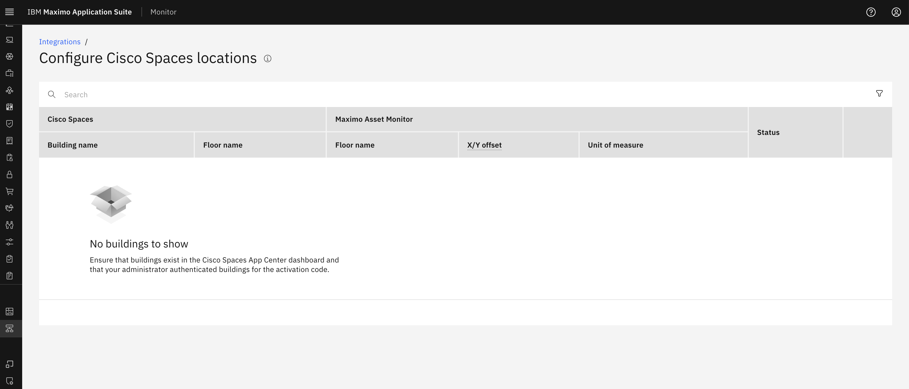

Configure Cisco Spaces Integration
This guide explains how to configure Cisco Spaces integration in IBM MAS Monitor using the Activation Token generated earlier.
Steps to Configure the Integration
-
Log in to IBM MAS Monitor
Access your MAS Monitor environment by logging in with your credentials in Maximo Application Suite.
-
Navigate to Integrations
Open the left-side navigation menu. Scroll to the Monitor applications list and select Setup → Integrations from the menu options.
-
Add a New Integration
On the Integrations screen, click the Add Integration button to start configuring a new integration.
-
Select Cisco Spaces as the Integration Type
In the integration configuration dialog, choose Cisco Spaces as the integration type.
-
Provide Integration Details
- Enter a meaningful Integration Name.
- Paste the Activation Token you copied from the previous exercise.
- Click Finish to complete the integration setup.
Warning
- Ensure the Activation Token is correct.
- Make sure the token has not expired.
- Verify the token has not been used previously for activation. Once a token is activated, an activation key is stored in the database, making that token unusable for any other integration. One token can only be used for a single configuration.
- Only a correct and valid token will be saved successfully; otherwise, the integration setup will fail with an error.

- Enter a meaningful Integration Name.
-
Verify Integration
Once the integration is added successfully, its details will appear on the Integrations list page. This confirms that the configuration has been saved.
-
View locations
Within a few minutes, the list of locations associated with the Activation Token will be fetched automatically from Cisco Spaces and displayed in MAS Monitor.